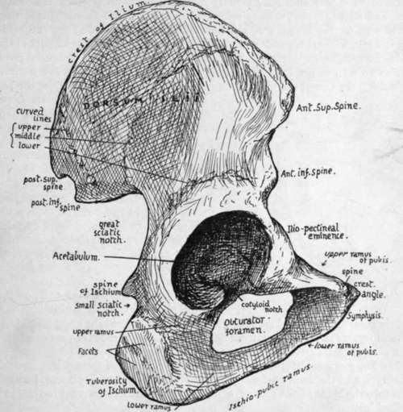

Os Innominatum
Description
This section is from the book "The Anatomy Of The Human Skeleton", by J. Ernest Frazer. Also available from Amazon: The anatomy of the human skeleton.
Os Innominatum
A large irregular bone that helps to form the bony pelvis in conjunction with its fellow and the sacrum. It articulates at its upper and back part with the side of the sacrum, below and in front with its fellow in the middle line, and with the femur externally. The bone is formed by the fusion of three separate main pieces : these are (Fig. 95) the Ilium above, the Ischium below and behind, and the Pubis below and in front. Where the three parts meet is placed the acetabulum, on the outer side, for articulation with the femur, so that the articular surface of this cavity is composed of portions of all three parts. The three parts are joined only by cartilage till just before puberty, so that the following description applies to the adult bone.
Looked at from the outer side (Fig. 96) the bone shows, below its middle, the large and deep acetabulum to receive the head of the femur, surrounded by the prominent acetabular rim, best marked behind and above. The wall of the cavity is deficient below, constituting the cotyloid notch.
Above the acetabulum is the wide outer surface of the ilium (dorsum ilii) for the gluteal muscles, and their areas of origin are marked on the surface by the upper, middle, and lower curved lines, due to the presence of tendinous fibres on the surfaces of the muscles. Above, the bone terminates in the thick crest of the Ilium, and this ends in front and behind in the anterior superior and posterior superior spines : below these spines are notches which separate them from the anterior and posterior inferior spines of the Ilium. Below the anterior inferior spine is another ill-defined notch and the ilio-pectineal eminence, which marks the junction of Ilium and pubis : below the posterior inferior spine is the deep great sciatic notch, and near the front border of this notch, on the base of the wall of the acetabulum, is another rounded thickness which marks the junction of Ilium and Ischium.
The body of the Ischium is the mass of bone below and behind the acetabulum, and forming part of this cavity : this is connected by an upper ramus with a large tuberosity with facets on its postero-external aspect for the origin of the hamstring muscles : above this is the lesser sciatic notch, which is separated from the great notch by the sharply projecting spine of the Ischium. In front of the Ischium and between it and the body of the pubis is a large hole, the obturator foramen (or thyroid foramen), which is bounded below by the Ischio-pubic ramus, a compound of a lower ramus projecting forward from the Ischium, and one, the lower ramus of the pubis, projecting back from thepubis. The body of the pubis forms the front boundary of the obturator foramen and, with the Ischio-pubic ramus, gives origin to the Adductor group of muscles : its inner border is the symphysis, which is connected with its fellow of the opposite side by means of an intervening plate of fibro-cartilage : the upper end of the symphysis forms the angle at its junction with the crest, which gives attachment to the Rectus abdominis and terminates externally in the prominent point of the spine, to which Poupart's ligament is attached. Outside this the upper ramus extends to the Ilio-pectineal eminence, where it joins the Ilium ; its front border gives attachment to the pubo-femoral band of the hip capsule, and overhangs the obturator foramen.
Fig. 95.-To show the three divisions of the innominate bone which fuse to form it about puberty; the thick lines are cartilage.
Thus the outer aspect of the bone shows four margins, of which the upper and lower are the crest of the Ilium and the Ischio-pubic ramus respectively ; the anterior margin is on the whole a concave line, allowing exit for muscles, etc., below Poupart's ligament, and presents, from above downwards, anterior superior spine, notch, anterior inferior spine, notch, Ilio-pectineal eminence, upper surface of superior ramus of pubis : posterior margin is more irregular and shows posterior superior spine, notch, posterior inferior spine, great sciatic notch, Ischial spine, lesser sciatic notch and tuberosity of Ischium.
Fig. 96.-View of right innominate from the outer side.
Looked at from the inner side (Fig. 98) the same parts can be recognised in the margins, but three distinct main surfaces are apparent. The first of these is in the upper and back part and looks directly inward : it has an articular area shaped like an ear and hence termed the auricular surface : above and behind this a rough ligamentous area for the strong posterior sacro iliac ligaments, and above and behind this again is a muscular area, which really occupies the expanded posterior part of the crest, for the Erector spinae muscle. A strong bony buttress runs obliquely downwards and forwards from the auricular region to the pubis, called the Ilio-pectineal line, and forming the bony brim of the true pelvis in this region : this divides the bone into the remaining two surfaces, an upper one, which is abdominal and formed by the venter ilii and part of the pubis, and a lower pelvic part, consisting of Ischium with a large proportion of pubis and a very small amount of Ilium. The ventral surface of the Ilium is slightly concave, looking upwards and forwards and inwards, and forming the bony Iliac fossa giving origin to and covered by Iliacus. The wall of the true pelvis, or lower portion of the bone, is concave from before backwards, and is mainly covered by Obturator internus, which also arises from it : above this muscle, however, is a deep groove leading to the top of the obturator foramen, and below it, on the inner side of the tuberosity of the Ischium, is a rough falciform ridge for the attachment of the falciform process of the great sciatic ligament. The Ischio-pubic ramus is seen, from this aspect, to have its lower part everted, affording an area for attachment of the crus penis or chtoridis.
The Ilio-pectineal line, traced on to the upper ramus of the pubis, presents secondary ridges, and the main part of these, made by Gimbernat's ligament, turns forward to run into the spine of the pubis : other parts are directed internal to this, as will be described later.
The Levator ani arises from the back of the body of the pubis, from the inner side of the ischial spine, and from the fascia covering the Obturator internus between these points. It follows, therefore, that below a line drawn between these bony points the Ischio-pubic portion is in relation with and gives attachment to structures in the perineal and Ischio-rectal regions, while above this hne its relations are with structures in the pelvic cavity.
It is convenient now, before proceeding to a more detailed examination of these bones, to consider the general structure of the pelvis. For this purpose the complete skeleton may be used, but it is advisable to have in addition an articulated pelvis with the ligaments in situ.
Fig. 97.-Pubic part of right bone from the front.
Continue to: